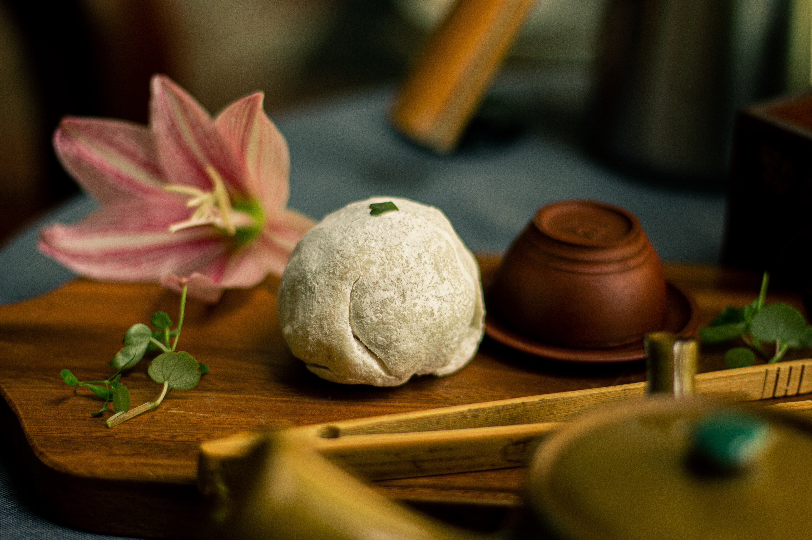

A lovely Chinese New Year's snack; soft, slightly sweet, and chewy, this is a wonderful traditional dessert. Ready in only minutes. Serve with steaming hot tea!
Wrap red bean paste in aluminum foil and place in the freezer for at least 3 hours. Mix sweet rice flour and green tea powder thoroughly in a microwave-safe glass or ceramic bowl. Stir in water, then sugar. Mix until smooth. Cover bowl with plastic wrap.
Cook the rice flour mixture in the microwave for 3 minutes and 30 seconds. Meanwhile, remove red bean paste from the freezer and divide paste into 8 equal balls. Set aside. Stir rice flour mixture and heat for another 15 to 30 seconds.
Dust work surface with cornstarch. While the mochi is still hot from the microwave, begin rolling balls the size of about 2 tablespoons. Flatten the mochi ball and place 1 frozen red bean paste ball in the center. Pinch the mochi over the red bean paste until the paste is completely covered. Sprinkle with additional cornstarch and place mochi seam side down in a paper muffin liner to prevent sticking. Repeat until all the mochi and red bean paste is used.